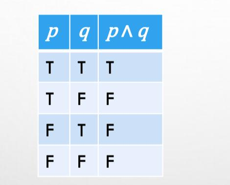
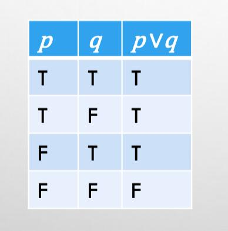
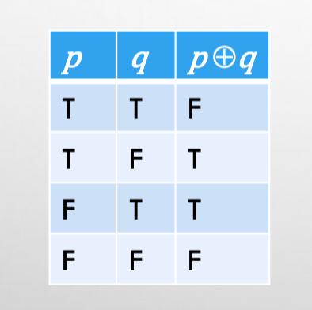
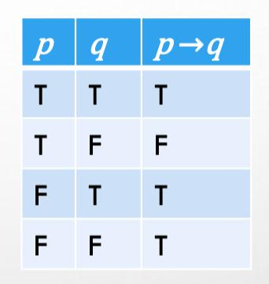
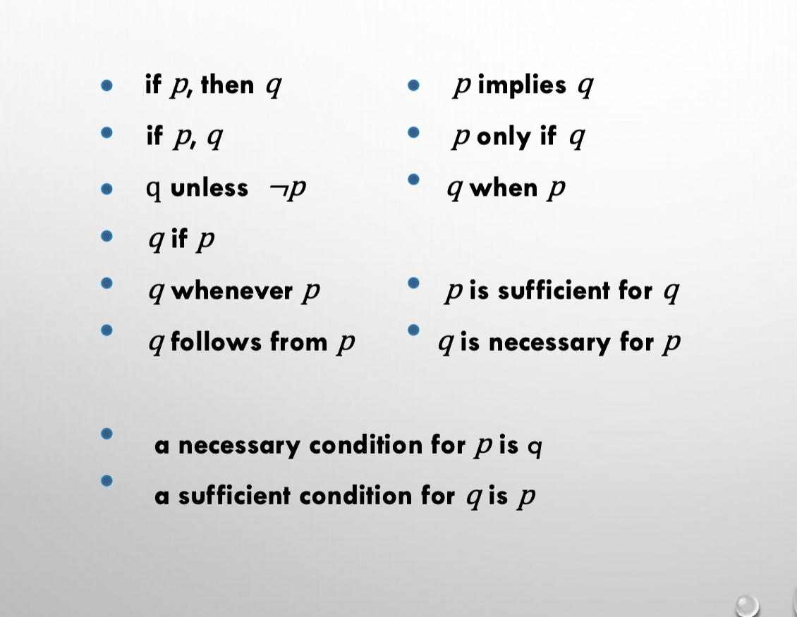

WELCOME TO MODULE 2 🥳
Module 2
TRUTH TABLE
A truth table displays the relationships between the truth values
of propositions. All possible truth values are displayed in a
truth table. They are especially used to determine the truth
values of compound propositions (propositions constructed from
simpler propositions)
CONJUNCTION (AND) TRUTH TABLE
The conjunction of propositions p and q denoted by p ∧ q is true when both p and q are true, and false otherwise.

EXAMPLE
p : “I am at home.”
q :“It is raining.”
p ∧ q :“I am at home and it is raining.”
DISJUNCTION (OR) TRUTH TABLE
The disjunction of propositions p and q denoted by p v q is another proposition (p v q) that is true when either p or q (or both) are true, and false otherwise.

EXAMPLE
p :“I am at home.”
q : “It is raining.”
p ∨ q :“I am at home or it is raining.”
EXCLUSIVE OR TRUTH TABLE
The exclusive-or of two propositions p, q, is another proposition (p ⊕ q) that is true when either p or q but not both are true, and false otherwise.

THE CONNECTIVE "OR" IN ENGLISH
In English “OR” has two distinct meanings.
- “Inclusive Or” - In the sentence “Students who have taken CS202 or Math120 may take this class,” we assume that students need to have taken one of the prerequisites but may have taken both. This is the meaning of disjunction. For p ∨ q to be true, either one or both of p and q must be true.
- “Exclusive Or” - When reading the sentence “Soup or salad comes with this entrée,” we do not expect to be able to get both soup and salad. This is the meaning of Exclusive Or (Xor). In p ⊕ q , one of p and q must be true, but not both.
IMPLICATION TRUTH TABLE (P → Q)
If p and q are propositions, then p → q is a conditional statement or implication which is read as “if p, then q ” that is false when p is true and q is false, and true otherwise.

EXAMPLE
p : “I am at home.”
q : “It is raining.”
p → q : “If I am at home then it is raining.”
In p → q , p is the hypothesis (antecedent or premise) and q is the conclusion (or consequence).
DIFFERENT WAYS OF EXPRESSIONG (P → Q)

MATERIAL FOR FURTHUR LEARNING😉
ASSESSMENT🎯 :